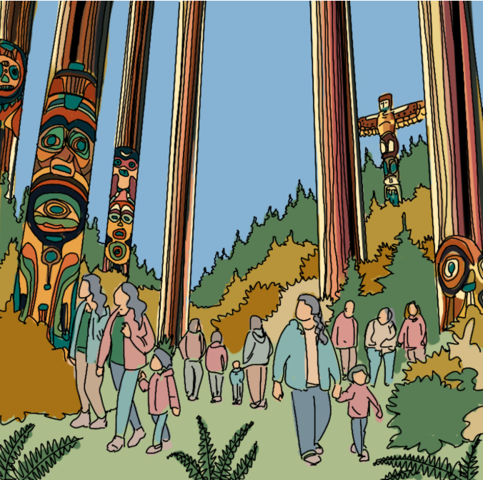
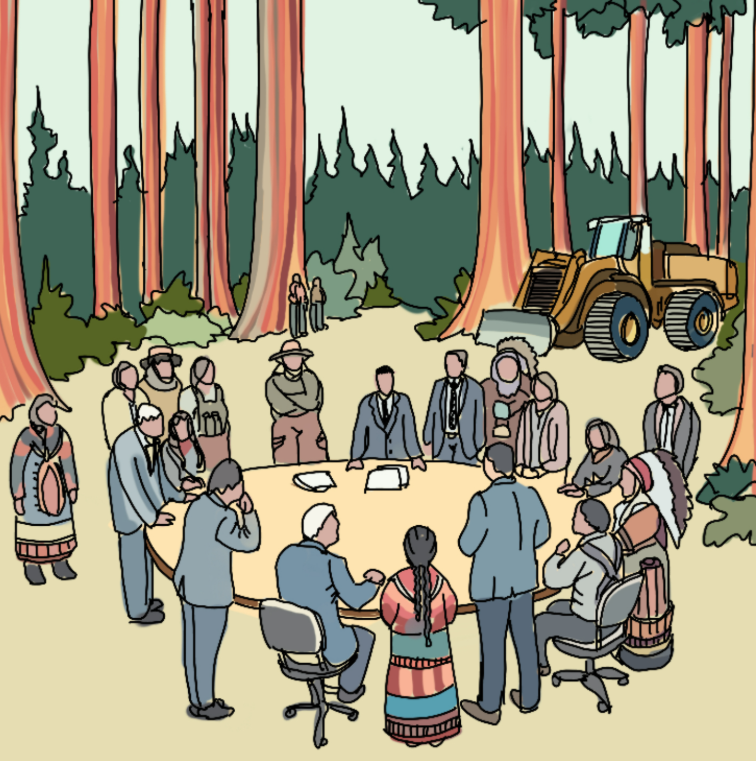

This is Cortes
Audience Specific Messaging for Cortes Island
Authors: Genevieve Doiron & Max Lorsignol
Non-Indigenous Residents
Cortes Island is home to approximately 1000 year-round residents dispersed between the communities of Cortes Bay, Whaletown, Squirrel Cove and Mansons Landing (“Our Community” 2013). The community is diverse both in age and background. Including working professionals, young families, and retirees. Professions on the Island include “farmers, loggers, artists, educators, retirees” and those seeking a slower pace of life (“Our Community” 2013). Their core values include independence, community connection, economic security, and preservation of nature. The communities on the island are close-knit, with active participation in community events and initiatives by locals of all ages (“Our Community” 2013). They are connected by their shared desire to live independently, yet collaboratively, in a rural and natural setting. The values of self-reliance and resource based livelihoods are echoed in many of their chosen professions as farmers, loggers, and crafts-people. The communities on the island are quite rural, much of the appeal to live there is the area’s rugged wilderness and natural beauty, which also underpins the island’s tourism industry. With regards to the Cortes Forestry General Partnership community members value the forest through their personal connection to nature as well as their reliance on the forest and other natural resources for their livelihoods (Bullock and Hanna 2012). Messaging should appeal to ethos and pathos; ethos through the delivery of the message from trusted and respected community members and pathos through an appeal to their emotional connection to the land and their community.
This is Cortes: Forestry from the Roots Up

Renewing the forest agreement is essential to ensuring that the voices of Cortes residents remain at the heart of decisions that shape our future. This agreement is crafted by us, for us—those who live here, understand this land, and are committed to its well-being. Outsiders should not determine the future of our island; we know our community and what it needs to thrive. This agreement protects our right to support each other and secure a sustainable future. It will bring us jobs, strengthening our local economy, and safeguard the forest, ensuring its health for generations to come. Together, we can shape the future of Cortes, protecting both our people and our environment.
The core message of renewing the forest agreement directly appeals to the values of independence, community, livelihoods, and connection to nature that are central to Cortes Island residents. By centering that the agreement ensures decisions about the future of the island are made by those who live there, the message upholds the community’s desire for self-reliance and local control. It also highlights the economic benefits of sustainable forestry, promising job creation and a thriving local economy without compromising the island’s natural resources.
The message appeals to the strong emotional bond residents have with the island’s wilderness. It positions the renewed agreement as a way to safeguard the forest for future generations, resonating with their commitment to preserving the environment as well as the multi-generational nature of the community. It offers a vision of ecological sustainability, where the forest is preserved not only for the current generation but for their children and grandchildren as well. Cortes Island is a close-knit community, where collaboration and mutual support are integral to daily life. By emphasizing that the agreement is crafted by residents, for residents, the message highlights the role of the community in shaping its own future. It reminds residents that, together, they can make decisions that benefit both people and the land, fostering a sense of unity and collective responsibility. It encourages residents to unite in protecting both the land and their way of life, ensuring that Cortes remains the vibrant community they love.
The message focuses on community more than the economic benefits of the partnership because people tend to respond most strongly to appeals on emotion. Words such as “us”, “together”, “heart”, and “protect” were used to invoke an emotional response towards security and closeness, such that the residents would opt to stay with the status quo. This message would be best delivered by trusted and respected community members, appealing to ethos and pathos at once. The visual is meant to support the message by depicting the beautiful nature they love with the vibrant diverse and inter-generational community it supports. The forest is drawn as lush and vibrant, framing the resource as the center of the discussion and alluding to the fact that supporting the agreement would support the forest health.
Provincial Government, Ministry of Forests
The British Columbia Ministry of Forests is committed to a sustainable and competitive forest sector that prioritizes forest stewardship, worker support, innovation, and climate resilience. The Ministry values collaboration with First Nations, industry, and other stakeholders to ensure that forest management practices are effective, inclusive, and forward-thinking (Forests, n.d.). Generally their framework is guided by western ideologies, scientific research and economic priorities. While they publicize their commitment to integrate Indigenous knowledge systems within that framework, historically the approach is of a western, empirical and policy driven perspective. That being said, as a government body, the Ministry is also deeply concerned with public perception and voter approval. As such, they would likely respond to messaging that aligns itself with their public priorities. They would be seeking to demonstrate that the forest policies they promote benefit both the environment and local communities.
Messaging to the Ministry should appeal to logos, emphasizing the proven track record of the CFGP in successfully balancing environmental sustainability, local job creation, and community collaboration. Governments are typically resistant to change, especially when existing solutions are working, so highlighting the cooperative’s successful model will help reinforce the idea that this approach is effective, trusted, and aligned with the Ministry’s goals for sustainability and public support.
Cortes Together: A Forward-Thinking Approach with a Proven Foundation

The Cortes Forestry General Partnership (CFGC) has proven success; it is economically viable, environmentally responsible, and widely supported. Through four community-backed harvests, the CFGC has shown the effectiveness of a public, private, resident, and Indigenous cooperation. The partnership has strengthened the local economy, created jobs, and preserved the island’s natural resources. The best path forward is one with a proven foundation, built brick by brick by the community it supports. The best path forward is together.
The core message directly appeals to the Ministry of Forests’ focus on sustainability, economic viability, and public support. The message is grounded in logos, highlighting the proven success of CFGP in balancing environmental stewardship, job creation, and community collaboration. The message appeals to the government’s goal to create a competitive forest sector by referring to the successful harvests and jobs created. It also appeals to ethos by stating that the forestry practices of the agreement are scientifically grounded.
As well, the emphasis on community support is particularly relevant to the Ministry, as public perception and voter approval are critical factors in government decision-making. The successful integration of local residents and the Klahoose First Nation through the CFGP showcases a collaborative approach that the government seeks to foster. As well given past disagreements and protests from the First Nation and non-Indigenous community members with forestry companies (Bullock and Hanna 2012), highlighting the community support of the agreement also positions it as superior to previous approaches. The visual created supports this message by showing government officials, community members, and First Nations leaders collaborating in a round table discussion. The visual depicts this happening in the forest, which is drawn as lush and vibrant with towering trees. This is in order to center the resource and frame it as prosperous and healthy while shown in tandem with heavy machinery – depicting a sustainable forest industry. Government’s are typically risk averse and resistant to change, especially when a plan is working effectively. The message directly plays to this understanding by stating the agreement’s success and questioning any reason for change. The message clearly positions renewing the agreement as the proven, popular, and politically advantageous option.